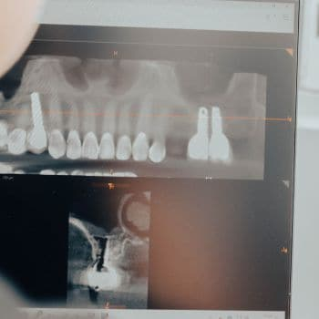
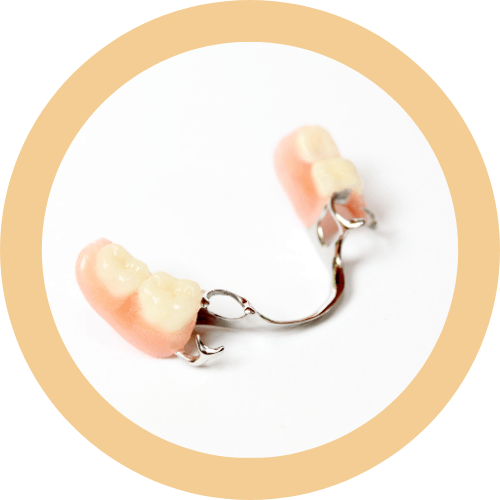

Especialidad
Prótesis dental
«Diferentes alternativas cuando decidimos no usar implantes»

¿Qué es una prótesis?

Una prótesis dental es un elemento artificial destinado a restaurar la anatomía de una o varias piezas dentales. Con ello se restaura también la relación o engranaje entre los maxilares, se devuelve la dimensión vertical (altura dental), y se reponen las piezas dentales perdidas.
Tipos de prótesis dentales
La división principal de las prótesis se realiza según sean fijas o removibles por el paciente:
- Prótesis fijas: son aquellas prótesis que el paciente no puede remover o quitar de su boca. Se fijan en la clínica por el especialista mediante cementos especiales a los propios dientes del paciente o, en el caso que se asienten sobre implantes, éstas irán fijadas por tornillos o en algunos casos también irán cementadas al implante. Exigen mucho cuidado e higiene por parte del paciente y son más parecidas a los dientes naturales. Puedes conocer más sobre los diferentes tipos de prótesis fijas en el siguiente apartado, o puedes pedir cita y tu especialista te aconsejará personalmente.
- Prótesis removibles: este tipo de prótesis sí que pueden ser removidas por el propio paciente. Van sujetas a los dientes remanentes por ganchos, o en el caso de que no exista ningún diente, se extienden a lo largo de la encía apoyándose sobre ella. Es recomendable retirarlas después de cada comida para limpiarlas, al igual que limpiaríamos nuestra dentición natural y seguir algunos consejos que tu especialista te explicará.
A la hora de decidir cuál de las dos es más conveniente para tu caso, te explicaremos mediante un estudio personalizado las ventajas o inconvenientes de cada una. Pide una cita con tu especialista y te orientaremos sobre cuál es la mejor opción para ti dependiendo de tus propias necesidades.
Prótesis dentales fijas
Existen diferentes tipos de prótesis fijas dependiendo de cuantas piezas restauren o sustituyan e incluso también dependiendo de si apoyan sobre dientes naturales, o sobre implantes artificiales.
También las podríamos clasificar según los materiales más o menos estéticos que utilicemos para diseñarlas.
- Coronas unitarias: son las que nos restauran una única pieza dental. Una corona dental es una especie de casco o funda que se coloca sobre una pieza dental dañada, débil, o rota. Con ello conseguimos restaurar su forma, tamaño, fuerza, sensibilidad y mejorar su aspecto. Suelen ser necesarias en las siguientes situaciones: Para proteger una pieza débil por caries o rotura. Para restaurar un diente que ya ha sido severamente desgastado. Para cubrir dientes muy teñidos o malformados. Para reforzar una pieza tras haber realizado una endodoncia que la fragiliza. Para restaurar implantes dentales (hablaremos de ello más adelante). Para realizar puentes dentales.
- Para proteger una pieza débil por caries o rotura.
- Para restaurar un diente que ya ha sido severamente desgastado.
- Para cubrir dientes muy teñidos o malformados.
- Para reforzar una pieza tras haber realizado una endodoncia que la fragiliza.
- Para restaurar implantes dentales (hablaremos de ello más adelante).
- Para realizar puentes dentales.
- Puentes dentales: se utilizan cuando perdemos piezas dentales como alternativa a los implantes. Son iguales a las coronas o fundas dentales pero nos sirven para restaurar las piezas dentales perdidas mediante varias coronas que irán unidas entre sí. Aunque reemplazar un diente perdido puede parecer sólo un problema cosmético, en realidad es mucho más que eso y tiene gran impacto en la salud dental. Los dientes se necesitan todos entre sí para mantener la posición correcta. Así que cuando se pierde un diente, los dientes antagonistas (los que estaban a los lados) van a empezar a cambiar de posición lo que da lugar a mordida desalineada, problemas en la articulación temporomandibular y un mayor riesgo de caries y enfermedad de las encías. Existen diferentes tipos de puente fijos: Puente fijo: es el más utilizado. Son una serie de coronas dentales unidas entre sí. Se sujeta a cada lado del “hueco” por una corona cementada en las piezas dentales adyacentes (pilares). En el medio irán unidos entre sí uno o varios dientes postizos (pónticos) reemplazando así las piezas perdidas y devolviendo el aspecto estético y funcional. Se usa por tanto cuando un diente debe ser reemplazado y no se puede colocar un implante dental. Puente Maryland: suele usarse de forma provisional para casos estéticos en el sector anterior de la boca. En este caso los dientes postizos (pónticos) se unen a los de los lados del “hueco” mediante unas bandas metálicas que van cementadas por detrás (cara no visible) de los dientes adyacentes. Puente en extensión: rara vez utilizado en la actualidad. Es igual que el puente fijo, salvo que en lugar de anclarse a ambos lados del “hueco”, solo existe anclaje a uno de los lados dejando el otro extremo libre, en extensión o en palanca. Se usa muy poco ya que esta fuerza de palanca puede dañar con el tiempo a los dientes que lo sustentan (pilares). Prótesis fijas sobre implantes: en ésta ocasión los pilares de sujeción de la prótesis ya sea unitaria, o ya sean puentes, serán los implantes en lugar de dientes naturales. Puedes informarte más sobre ello en apartado de implantología, o bien pedirnos consejo personalmente acudiendo a nuestra clínica. Estaremos encantados de explicarte las diferencias.
- Puente fijo: es el más utilizado. Son una serie de coronas dentales unidas entre sí. Se sujeta a cada lado del “hueco” por una corona cementada en las piezas dentales adyacentes (pilares). En el medio irán unidos entre sí uno o varios dientes postizos (pónticos) reemplazando así las piezas perdidas y devolviendo el aspecto estético y funcional. Se usa por tanto cuando un diente debe ser reemplazado y no se puede colocar un implante dental.
- Puente Maryland: suele usarse de forma provisional para casos estéticos en el sector anterior de la boca. En este caso los dientes postizos (pónticos) se unen a los de los lados del “hueco” mediante unas bandas metálicas que van cementadas por detrás (cara no visible) de los dientes adyacentes.
- Puente en extensión: rara vez utilizado en la actualidad. Es igual que el puente fijo, salvo que en lugar de anclarse a ambos lados del “hueco”, solo existe anclaje a uno de los lados dejando el otro extremo libre, en extensión o en palanca. Se usa muy poco ya que esta fuerza de palanca puede dañar con el tiempo a los dientes que lo sustentan (pilares).
- Prótesis fijas sobre implantes: en ésta ocasión los pilares de sujeción de la prótesis ya sea unitaria, o ya sean puentes, serán los implantes en lugar de dientes naturales. Puedes informarte más sobre ello en apartado de implantología, o bien pedirnos consejo personalmente acudiendo a nuestra clínica. Estaremos encantados de explicarte las diferencias.
Dada la importancia de reemplazar las piezas dentales perdidas como ya hemos venido insistiendo, queremos ayudarte a decidir si en tu caso son más aconsejables puentes o implantes de forma individualizada. Podemos hacerte un estudio gratuito y personalizado explicándote las diferencias, ventajas o inconvenientes. Pide cita con tu especialista y te ayudaremos a resolver tus dudas.
Prótesis dentales removibles
Dependiendo si al paciente le quedan dientes en boca, o por el contrario está totalmente edéntulo (sin piezas dentales) la prótesis removible será parcial o completa.
- Prótesis removible completa: una prótesis completa o dentadura es necesaria cuando el paciente no tiene ninguna de sus piezas dentales. Se sujetan extendiéndose a lo largo de la arcada o encía, creando un pequeño vacío o en ciertas ocasiones son necesarios o recomendables pegamentos especiales para prótesis. Suelen ser tratamientos sencillos y rápidos que devuelven al paciente su funcionalidad total de la boca y su estética en un solo paso. Su uso puede suponer al principio una carga psicológica para el paciente puesto que se asocia a un signo de envejecimiento. Estas situaciones incómodas y las pequeñas molestias iniciales desaparecen con el tiempo, el uso y la práctica. Después del diseño y colocación de una prótesis seguimos un riguroso control de citas para ayudar a que el paciente esté cómodo con ella lo antes posible realizando los controles y retoques que sean necesarios de forma totalmente individualizada. Nuestra clínica ha colaborado y colabora actualmente con 5 residencias de ancianos no sólo de Boadilla del Monte sino también de la Comunidad de Madrid desde hace más de 10 años desplazándonos incluso a la propia residencia para atender a los mayores sean cuales sean su estado de salud y/o movilidad. Como la encía sin dientes sufre una degeneración y atrofia el hueso que la sujeta, es recomendable hacer reajustes en las dentaduras cada año y medio o dos y cambiarlas cada 6 o 7 años. Esto es algo que casi nadie realiza y con ello se optimiza el ajuste de la prótesis a los cambios que sufren en la forma y en el volumen de las encías. Sería como hacernos un traje a medida y pretender que nos siente como el primer día durante los siguientes 7 años o más en la mayoría de los casos.
Actualmente en los casos en los que el paciente presenta hueso suficiente, este tipo de prótesis pueden “evolucionar” colocando 2 o 4 implantes que se encarguen de la perfecta sujeción de la prótesis incrementándose este agarre en un 300%. En este caso se denominan sobredentaduras (ver implantología).
- Prótesis removible parcial: una prótesis removible parcial se utiliza cuando el paciente aún posee algunas de sus piezas dentales pero se decide no usar prótesis fijas por motivos físicos (estado de las piezas remanentes o mucha separación entre ellas o número insuficiente), por falta de hueso (no se podrían poner implantes) o por motivos económicos (ya que este tipo de prótesis son más baratas que las prótesis fijas). Se sujetan a los dientes o piezas remanentes mediante unos pequeños ganchos que permiten mediante fricción mantener la posición correcta de la prótesis en la boca. Esto supone una gran ventaja y comodidad frente a las prótesis completas puesto que suelen ser más seguras y cómodas. Suelen ser tratamientos sencillos y rápidos que devuelven al paciente su funcionalidad total de la boca y su estética en un solo paso. Al igual que las prótesis completas, su uso puede suponer al principio una carga psicológica para el paciente puesto que se asocia a un signo de envejecimiento. Estas situaciones incómodas y las pequeñas molestias iniciales desaparecen con el tiempo, el uso y la práctica. Después del diseño y colocación de una prótesis seguimos un riguroso control de citas para ayudar a que el paciente esté cómodo con ella lo antes posible realizando los controles y retoques que sean necesarios de forma totalmente individualizada.
Nuestra clínica ha colaborado y colabora actualmente con 5 residencias de ancianos no sólo de Boadilla del Monte sino también de la Comunidad de Madrid desde hace más de 10 años desplazándonos incluso a la propia residencia para atender a los mayores sea cual se su estado de salud y/o movilidad.
Como la encía sin dientes sufre una degeneración y atrofia el hueso que la sujeta, es recomendable hacer reajustes en las dentaduras cada año y medio o dos y cambiarlas cada 6 o 7 años. Esto es algo que casi nadie realiza y con ello se optimiza el ajuste de la prótesis a los cambios que sufren en la forma y en el volumen de las encías. Sería como hacernos un traje a medida y pretender que nos siente como el primer día durante los siguientes 7 años o más en la mayoría de los casos.
Consejos y cuidados prótesis removibles
En la actualidad somos capaces de diseñar tu prótesis dental (o dentadura postiza) de manera que se parezca lo más posible a tus dientes naturales, para que no haya cambios notables en tu apariencia o incluso mejorarla.
Sin embargo, es posible que te sientas extraño al empezar a usarlas, hasta que los músculos de tus mejillas y tu lengua aprendan a mantenerlas en posición y te sientas cómodo al ponértelas y al quitártelas. También podrías experimentar alguna irritación en la boca, y un aumento en la producción de saliva al principio. Pero estos problemas generalmente van desapareciendo a medida que tu boca se vaya adaptando a su uso. Además después del diseño y colocación de una prótesis seguimos un riguroso control de citas para ayudar a que el paciente esté cómodo con ella lo antes posible realizando los controles y retoques que sean necesarios de forma totalmente individualizada.
Una vez colocada la prótesis en boca, te aconsejaremos que uses tu prótesis nueva todo el tiempo (hasta para dormir). Aunque esto te resulte incómodo, es el modo más rápido de adaptarte a la prótesis e identificar las áreas que necesiten algún ajuste. Sólo te aconsejaremos retirarla para realizar una correcta higiene bucal después de las comidas. La forma de hacerlo será con un cepillo especial para prótesis que te regalaremos y con agua y jabón. La creencia popular de limpiar las prótesis dentales con pasta de dientes es errónea puesto que se trata de eso, de una prótesis de resina y no de dientes naturales (sería más bien como limpiar unas gafas). Pero te daremos los consejos adaptados a tu caso cuando te enseñemos a quitarte y ponerte tu prótesis.
En los primeros días, puede que también tengas alguna dificultad para pronunciar ciertas palabras. La solución más sencilla es practicar, pronunciando esas palabras en voz alta hasta que te suenen de modo normal, incluso te recomendamos que leas en voz alta. En cuanto a la comida, es posible que necesites unas semanas de práctica antes de que te sientas cómodo al masticar. Lo mejor es que empieces con alimentos suaves cortados en trocitos. Mastica lentamente con los dos lados de la boca, hasta que te acostumbres a manejar la prótesis. Eso sí, ten mucho cuidado con los alimentos duros, pegajosos o muy calientes, y trata de evitar los chicles.
Los implantes dentales son una buena alternativa a las prótesis dentales, ya que son lo más parecido a los dientes naturales. Pueden usarse para fijar de modo permanente los puentes, eliminando así la necesidad de usar prótesis. Pero no todas las personas son buenas candidatas para los implantes, aparte de que su costo es bastante más alto que el de las prótesis. Podemos informarte sobre las alternativas personalmente pidiendo cita gratuita, o puedes leer más sobre ello en implantología.
Los cuidados que te recomendaremos para tu nueva prótesis dental son los siguientes:
- Recuerda que las prótesis son frágiles, y pueden fracturarse si se caen en el lavabo o en cualquier superficie dura. Cuando las manipules, hazlo sobre un paño suave, que las acolchen y protejan si se te deslizan de las manos.
- Cepilla tu prótesis después de las comidas para mantenerla limpia, igual que haces con tus dientes naturales. Pero usa un cepillo especial para prótesis y agua con jabón puesto que es una prótesis de resina, sería más bien como si limpiaras tus gafas. Las cerdas de estos cepillos son muy suaves para que no se rayen los dientes y el agua con jabón tampoco posee sustancias abrasivas.
- Si te resulta inconveniente cepillar tu prótesis después de comer, enjuágate la boca con agua para eliminar cualquier partícula de alimento que haya quedado atrapada entre los dientes. Además de limpiar tu prótesis, es necesario que te cepilles las encías, la lengua y la parte interna de la boca con un cepillo de cerdas suaves tres veces al día. Así eliminas la placa y estimulas la circulación, lo que conserva sanas tus encías.
- Usa tu prótesis todos los días para asegurarte de que se adapta bien a tu boca. Con el tiempo, las encías y la línea de la mandíbula cambian y tienden a retroceder. Si usas la prótesis a diario, minimizas el problema.
- De todos modos, la prótesis debe ajustarse cada cierto tiempo para que se fije bien. Si la cuidas adecuadamente, suele durar de cinco a siete años antes de que debas reemplazarla por una nueva.
- Si la prótesis te sigue molestando después de un tiempo prudente, ven a vernos, probablemente necesite un ajuste. Si se mueve cuando hablas, o se suelta cuando te ríes o toses, habla también con tu especialista para que te la ajuste apropiadamente.
- Examina tu boca con frecuencia. Si te molesta, si hay algún área dolorosa, o si notas una llaguita que no sana, consulta enseguida con tu especialista. Eso es especialmente importante si padeces de diabetes.
Si tu dentista te recomienda el uso de una prótesis, considéralo. Con los grandes avances de los últimos tiempos, las prótesis dentales han perdido el estigma que tenían en el pasado. Actualmente se fabrican en distintas formas y colores para que parezcan naturales, y el mismo paciente puede escoger la sonrisa “a la medida” que siempre ha querido tener. Si usas una prótesis dental, piensa que sólo toma unos minutos al día el conservarla en buenas condiciones. Convierte su cuidado en un hábito, hasta que se vuelva parte de tu rutina diaria, y tu prótesis o dentadura mantendrá su apariencia, durará por años y nadie se dará cuenta de que tu sonrisa no es enteramente natural.